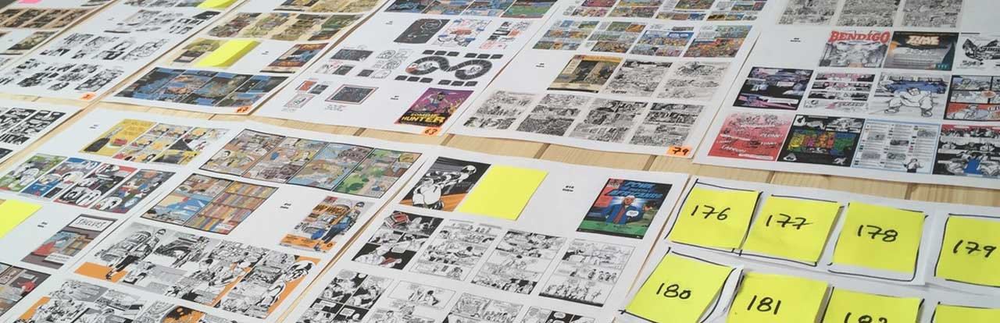
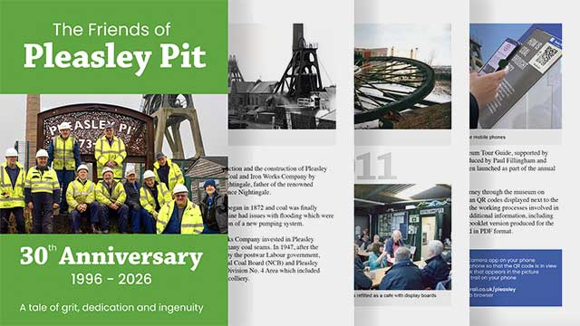
Friends of Pleasley Pit 30th Anniversary
Photographs and timeline of the 30 year restoration of the Pleasley Pit site by volunteers.
44 pages, A5, booklet
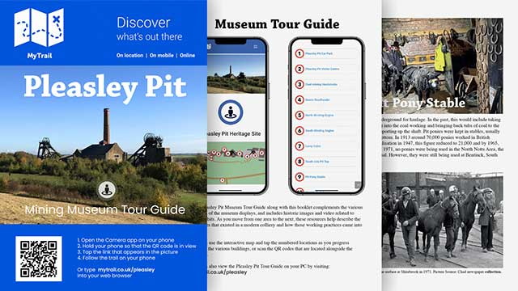
Pleasley Pit Mining Museum Tour Guide
Print companion to the Pleasley Pit Mining Museum Mobile Tour Guide. Part of the MyTrail heritage platform
20 pages, A5, booklet
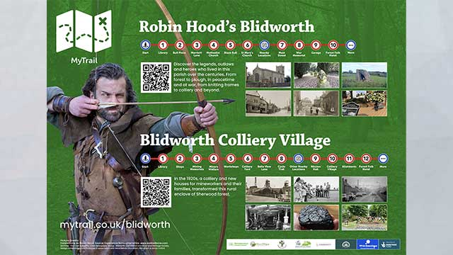
Blidworth Tour Guide interpretation signage
Artwork for the Robin Hood's Blidworth and Colliery Village Mobile Tour Guide interpretation signage. Part of the MyTrail heritage platform
AO sized panel
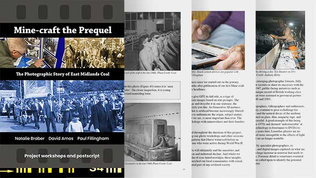
Mine-craft the Prequel (The workshops)
Documents the Nottingham Trent University heritage workshops attended by former East Midlands mineworkers to identify errors and update gaps in picture library metadata.
54 pages, A5, book
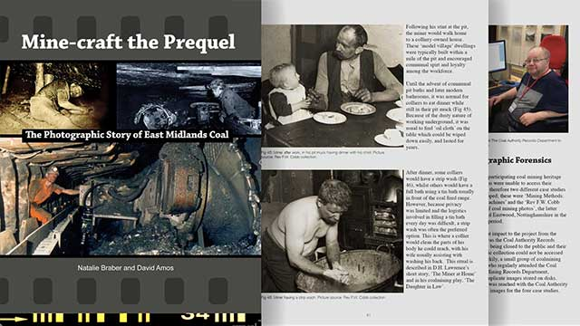
Mine-craft the Prequel (The archives)
Nottingham Trent University research project. 100 years of archive photography depicts a highly mechanised industry which contrasts with popular myths and iconography associated with coal mining.
60 page 210x280mm, book
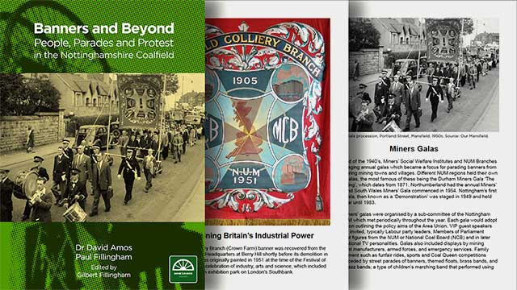
Banners and Beyond
Illustrated, key Stage 4 education booklet, documenting the history of the iconic Mining Union Banner in Nottinghamshire Mine2Minds research project.
28 pages, A5, booklet
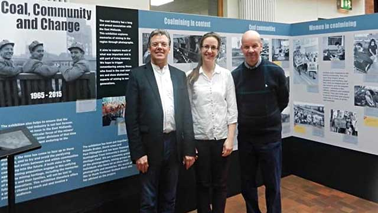
Coal Community and Change Exhibition
Co-curation and exhibition design for Nottingham Trent University heritage project. Touring photographic exhibition documenting 50 years of East Midlands Coal from 1965 to 2015. A collaboration with Professor Natalie Braber and Dr David Amos.
Exhibition panels and touchscreen audio app.
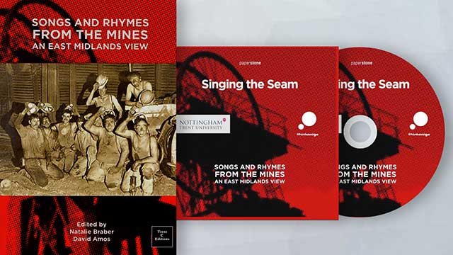
Songs and Rhymes from the Mines
Illustrated booklet with CD insert and audio downloads. Featuring children's illustrations and the work of poets and musicians from the East Midlands coalfield.
36 pages, A5, booklet and CD insert
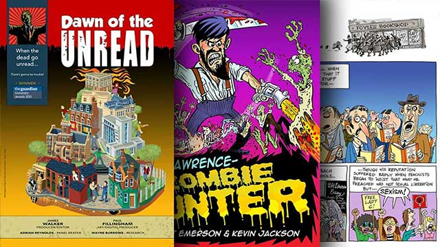
Dawn of the Unread
Zombie genre graphic novel anthology based on The Guardian Award-winning digital platform. Supported by UNESCO.
98 pages, A4, book
Forest Folk
I worked with Spokesman Press and UNESCO to champion and reprint James Prior's 1901 novel about my home village, Blidworth. Admired by D.H. Lawrence, Prior's 'Forest Folk' depicts life in Sherwood Forest during the time of the Napoleonic wars and Luddite uprisings.
366 pages, 130x19mm book
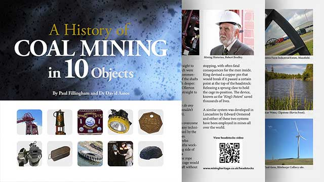
A History of Coal Mining in 10 Objects
Print companion to the research project which included a website, events and video. Archive into Assets was an Arts and Humanities Research Council (AHRC) project for the University of Nottingham and the first Fillingham and Amos heritage collaboration.
28 pages, 210x210mm booklet
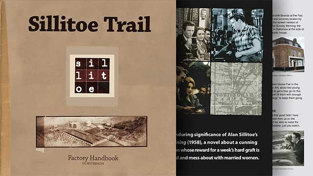
Sillitoe Trail Factory Handbook
Print companion for The Space on-demand arts platform. Featuring Nottingham-themed essays from creative practitioners. Supported by Arts Council England and BBC and the first Fillingham and Walker literary collaboration.
28 pages, 210x210mm booklet
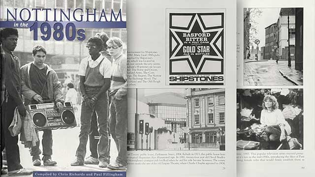
Nottingham in the 1980s
Student photographs and ephemera from the Fillingham and Richards archives. Tempus Publishing.
128 pages, 210x210mm book

Caption block works with gallery images.